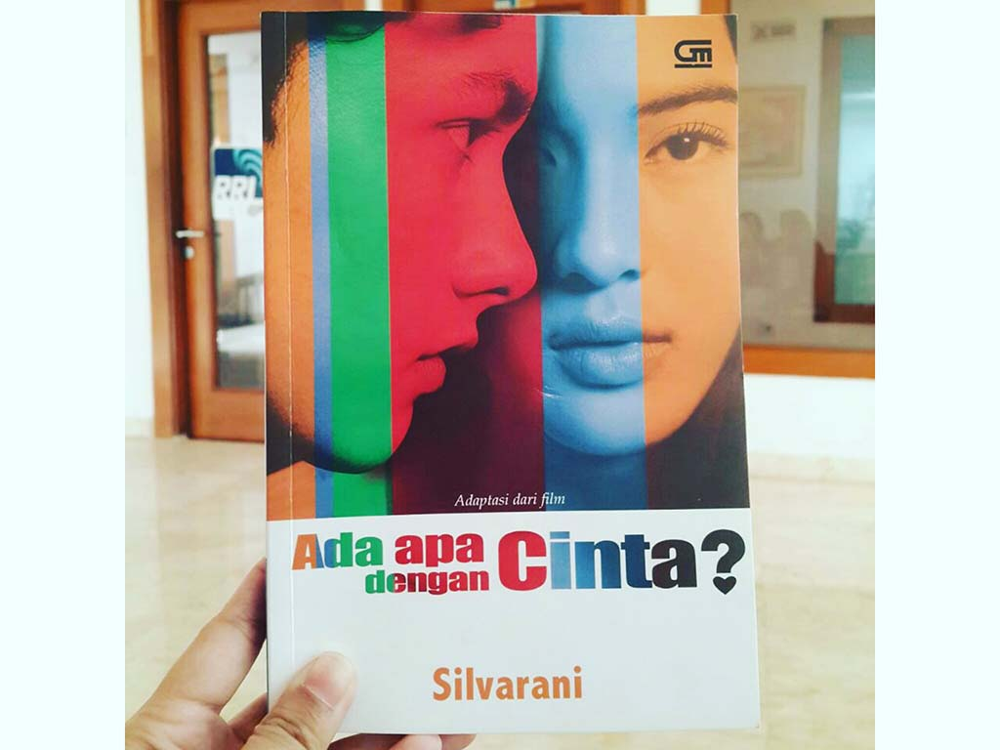

Sinopsis
Apa lagi yang kurang dalam hidup Cinta? Ia punya keluarga yang bahagia, popularitas di sekolah, banyak pengagum, dan yang paling penting, ia punya sahabat-sahabatnya. Alya, Maura, Milly, dan Karmen membuat hari-harinya selalu berwarna. Mereka adalah pusat dunia Cinta.
Sampai suatu hari, ia berkenalan dengan Rangga, cowok jutek dan penyendiri yang lebih suka berteman dengan buku daripada manusia. Ternyata mereka sama-sama menyukai puisi, minat yang tak bisa Cinta bagi dengan keempat sahabatnya. Dan perlahan hal itu membawa perubahan pada dirinya, membuat orang-orang di sekitarnya bertanya-tanya, ada apa dengan Cinta?
Ketika Cinta sendiri pun ikut mempertanyakan dirinya dan persahabatannya menjadi taruhan, apa yang sebaiknya ia lakukan?

Buku ini diadaptasi dari sebuah film yang berjudul sama. Buku ini mengandung sangat banyak karya sastra, yaitu puisi.Buku ini menceritakan kisah cinta antara Rangga dan Cinta. Cinta adalah siswi yang sangat populer di sekolahnya. Cinta memiliki empat orang sahabat karib, yaitu Karmen, Maura, Milly, dan Alya. Mereka tergabung dalam klub majalah dinding (mading) sekolah.
Pada suatu hari, sekolah mengadakan lomba puisi yang selalu diselenggarakan setiap tahunnya. Sudah dua tahun berturut-turut Cinta selalu memenangkan lomba puisi tersebut. Cinta sangat menyukai puisi. Baginya, merangkai kata menjadi sebuah kaya yang indah tidaklah sulit. Tiga minggu kemudian, hari pengumuman lomba puisi pun tiba. Semua orang yakin bahwa Cinta pasti akan keluar sebagai pemenang lagi. Kepala sekolah pun mengumumkan siapa pemenangnya. Dan ternyata pemenangnya bukanlah Cinta, melainkan Rangga. Semua orang penasaran dan menunggu pemenangnya naik ke atas panggung, tetapi tidak ada orang yang naik ke atas panggung. Rasa penasaran Cinta pun semakin menjadi-jadi.
Keesokan harinya, ketika istirahat, Cinta memutuskan untuk menghabiskan waktu istirahatnya di perpustakaan. Tanpa disengaja, Cinta pun bertemu Rangga. Tatapan mereka beradu. Hanya dalam hitungan detik sepertinya adu tatap itu mengirimkan getar ke hati mereka berdua. Namun Cinta dan Rangga buru-buru membunuh rasa yang sebenarnya sudah menyentuh hati mereka. Setelah itu, Cintapun memberi selamat pada Rangga atas kemenangannya. Tetapi Rangga malah bersikap dingin dan berkata bahwa ia tak pernah mengirimkan puisinya untuk dilombakan. Rangga memang seorang pemuda yang dingin, kaku, dan introvert. Rasa kagum dan penasaran terhadap Rangga pun berubah menjadi kebencian. Setelah itu, ia pun langsung menceritakan apa yang telah dialaminya kepada sahabat-sahabatnya. Sahabat-sahabatnya pun ikut geram pada Rangga setelah mendengar cerita Cinta.
Beberapa hari kemudian, Cinta menulis surat yang isinya makian dan sindiran untuk Rangga. Setelah Rangga membacanya, rasa geram menyelimuti hatinya, ia pun bergegas menemui Cinta di ruang redaksi. Cinta dan teman-temannya pun kaget melihat Rangga. Rangga pun mengajak Cinta untuk keluar dan berbicara. Disitu pun terjadi adu mulut antara Cinta dan Rangga. Akhirnya Rangga pergi meninggalkan Cinta dan saking terburu-burunya, Rangga tidak sengaja menjatuhkan dan meninggalkan bukunya di lantai. Kemudian Cinta diam-diam mengambil buku itu. Hari-hari Cinta berikutnya dipenuhi dengan membaca buku milik Rangga. Ia menjadi sering tidur larut, terlambat masuk sekolah, sering menghabiskan waktu di kamar untuk membaca buku itu. Beberapa hari kemudian, Cinta bertekad untuk mengembalikan buku itu pada Rangga, ia membungkus buku itu dengan kertas kado kemudian ditempelkannya secarik kertas kecil dan menuliskan beberapa patah kata. Keesokan harinya Cinta menaruh buku itu di atas meja yang biasa Rangga tempati.
Rangga terheran-heran melihat ada sebuah kado di atas mejanya. Ia pun membuka isi kado tersebut dan membaca surat yang ditempel pada kertas kadonya. Setelah mengetahui bahwa buku yang selama ini dicari-carinya telah kembali, Rangga merasa senang dan ia pun mengucapkan terima kasih pada Cinta. Semenjak kejadian itu, keduanya menjadi semakin dekat apalagi keduanya sama-sama menyukai puisi.
Kedekatan Rangga dan Cinta mulai mengganggu hubungan persahabatan Cinta dan sahabat-sahabatnya. Cinta sering absen dalam kegiatan-kegiatan yang telah direncanakan Cinta dan sahabat-sahabatnya. Puncaknya adalah ketika Alya menelepon cinta untuk menceritakan keadaan rumahnya yang memang sangat berantakan, ayahnya sering memukuli Alya dan ibunya. Waktu itu Alya memohon kepada Cinta untuk datang dan menginap di rumah Cinta. Tetapi Cinta menolaknya dengan alasan bahwa dirinya sedang sakit dan mau periksa ke dokter. Padahal, sebenarnya Cinta pergi bersama Rangga ke sebuah kafe.
Sepulangnya Cinta dari kafe tersebut, betapa kagetnya Cinta mendengar kabar bahwa sahabatnya, Alya melakukan percobaan bunuh diri. Cinta pun buru-buru pergi ke rumah sakit untuk melihat keadaan Alya. Sahabat-sahabatnya yang lain sudah tiba terlebih dahulu di rumah sakit, mereka semua kecewa pada Cinta karena telah berbohong. Cinta pun sangat menyesal. Ia pun langsung meminta maaf ketika Alya akhirnya siuman. Atas kejadian itu, Cinta menganggap Ranggalah penyebab perubahan pada dirinya, Ranggalah yang menyebabkan hubungan persahabatannya renggang. Cinta pun berjanji pada sahabat-sahabatnya untuk tidak menemui Rangga lagi. Beberapa hari kemudian, Cinta berkata kepada Rangga untuk tidak menemuinya lagi. Rangga akhirnya pun menyetujuinya. Semenjak hari itu, banyak perubahan dalam diri cinta. Ia jadi sering melamun, raut wajahnya selalu sedih, dan tidak semangat lagi. Para sahabatnya yang melihat keadaan Cinta pun terheran-heran, ada apa dengan Cinta? Setelah didesak oleh sahabat-sahabatnya, Cinta akhirnya mengakui bahwa ia memang sudah jatuh cinta pada Rangga. Para sahabatnya pun menyuruh Cinta untuk meminta maaf pada Rangga. Tapi ternyata, Rangga sudah beberapa hari tidak masuk sekolah. Rangga akan pindah sekolah ke New York dan pada hari itu adalah jadwal keberangkatan Rangga.
Setelah itu, tanpa berpikir panjang, Cinta dan sahabat-sahabatnya pun bergegas pergi menuju ke bandara untuk menemui Rangga. Cinta berharap bahwa ia masih bisa bertemu dengan Rangga. Setelah sampai, Cinta langsung berlari dan mencari Rangga. Akhirnya, ia pun menemukan Rangga. Ia menangis dan meminta maaf pada Rangga. Cinta meminta Rangga untuk tetap tinggal di Indonesia. Tetapi ternyata Rangga tetap harus pergi. Pada akhirnya Rangga, memberikan sebuah buku yang di halaman terakhirnya terdapat sebuah puisi berjudul “Ada Apa dengan Cinta?”. Ada beberapa patah kata dari puisi tersebut yang meyakinkan hati Cinta untuk menunggu Rangga, bait terakhir puisi tersebut berbunyi: “Aku akan kembali dalam satu purnama untuk mempertanyakan kembali cintanya … Bukan untuknya, bukan untuk siapa … Tapi untukku, karena aku ingin kamu, itu saja.”
Kekurangan dari novel ini adalah bahasanya yang terkadang terlalu rumit, sehingga terkadang sulit dimengerti oleh pembaca. Seharusnya penulis lebih menjelaskan lagi makna yang terkandung dalam setiap puisi-puisinya.
Kelebihan dari novel ini adalah dapat mengajak pembacanya untuk mengenal dan tertarik dengan karya sastra puisi yang sekarang sudah jarang ditemui di kalangan remaja. Cerita dari novel ini juga sangat realistis. Penulis mampu membuat pembacanya seakan-akan menjelma menjadi sosok Cinta. Puisi-puisinya pun mengandung kata-kata yang sangat indah walaupun sebagian sulit untuk dipahami.
Ada Apa dengan Cinta? adalah sebuah film percintaan Indonesia karya Rudi Soedjarwo yang dirilis pertama kali pada tanggal 7 Februari 2002 dan dibintangi Nicholas Saputra dan Dian Sastrowardoyo.
Film ini dirilis dan meraih sukses besar di Indonesia menyusul film Petualangan Sherina (2000) yang booming terlebih dahulu. Kesuksesan kedua film ini menandai kebangkitan kembali dunia perfilman Indonesia. Lagu tema Ada Apa dengan Cinta? yang dinyanyikan oleh Melly Goeslaw dan Eric menjadi hits, dan pasangan Rangga dan Cinta menjadi pasangan kekasih yang melegenda di era itu. Ada Apa dengan Cinta? ditayangkan di berbagai negara termasuk Malaysia, Brunei, Filipina dan Singapura.
Berikut trailer clip dari film Ada Apa Dengan Cinta. Selamat menonton!